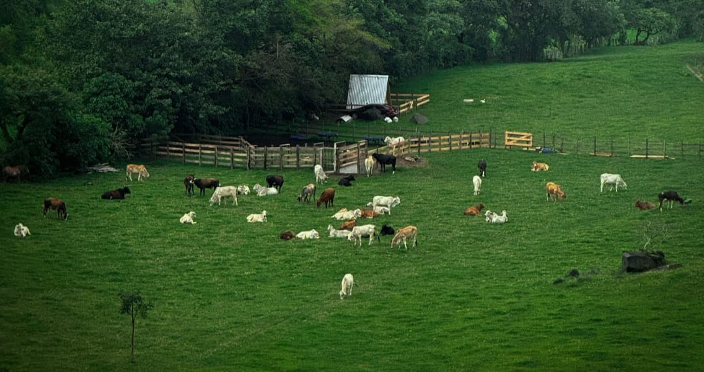

Sobre a CarneTins
A Associação Bovina CarneTins tem como objetivo contribuir para o fortalecimento da bovinocultura de corte no Tocantins, promovendo desenvolvimento, organização e valorização da atividade pecuária.

Projetos
Conheça alguns projetos voltados ao fortalecimento da bovinocultura de corte no Tocantins:
- Programa de melhoria da qualidade da produção bovina.
- Capacitação de produtores em manejo e sustentabilidade.
- Incentivo à adoção de tecnologias na pecuária de corte.
Contato
E-mail: contato@carnetins.com.br
Telefone: (63) 99999-0000
Endereço: Avenida Tocantins, nº 1000, Centro, Palmas - TO